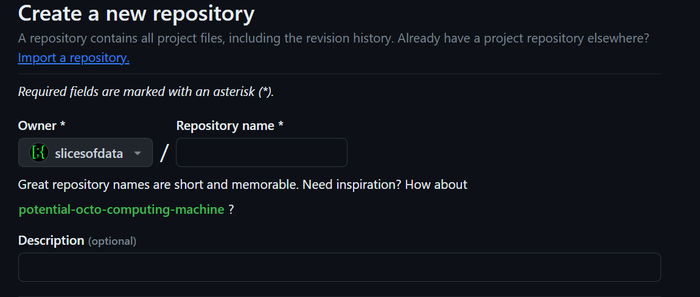

Installing and Setting Up Git and GitHub for R
Under construction.
This page is a work in progress and may contain areas that need more detail or that required syntactical, grammatical, and typographical changes. If you find some part requiring some editing, please let me know so I can fix it for you.
Overview
We will perform all the necessary tasks for using Git with RStudio and managing files at the remote repository at GitHub.
To Do: Steps of the Task
- Create a GitHub account
- Create GitHub repository: “fods-exercises”
- Install Git on your computer (if not already installed)
- Configure Git for R, within R/RStudio (a familiar context)
- Create a Personal Access Token (PAT)
- Set your Git Credentials (using your PAT)
Libraries Used
- {usethis}: 2.2.2: for project workflow automation
- {gitcreds}: 0.1.2: for querying git credentials
Git: Why Go Through the Trouble?
Projects are rarely done without collaborators. Teams collaborate, leveraging team members’ work and accomplishments. Using R in conjunction with the a distributed version control system, like Git, will facilitate that collaboration process. Writing flexible R code that does not hard-code objects will allow your research project to be reproducible, for example, when variables and data change (e.g., new data added, a new year added, etc.). Git long with GitHub will allow you to track your edits (the version control) and share your code with your collaborators or interested scholars.
Some benefits of using version control:
- Facilitates project sharing (once it’s setup, you’ll get there)
- Facilitates collaboration. Others can also report errors or suggest features to your project.
- Makes reverting back to previous states easy. You can easily revert back to a previous version of your code in the event you discover errors or you delete critical details accidentally.
- Serves as a memory for edits when memory fails. All changes across different versions of your code or written content is available.
RStudio integrates support for Git but this interface is a little clunky. You can use it but RStudio also allows for communication via the command line Terminal, which will be the preferred method shared here.
Creating a GitHub Account
Go to GitHub and create a free GitHub account. Make note of your username and your associated e-mail as you will need those for configuring Git with R.
- Consider this brief 15-minute TryGit Tutorial.
Stay logged in so that you can complete a later step.
Send your PM your GitHub username. Your PM will send those to me and I will add you to a private repo. Once you are added to the repo, you can do the next step.
Creating a Repository on GitHub
You will need to create a repository by following the option to do so using the GitHub UI. Use that link if necessary but the images below should suffice.
- Once logged into your GitHub account, you will see a + along the top of your account earn your profile icon. Click the option to create a “New Repository”.
- Name the repository fods-exercises and provide a description like “for fods class exercises and homework”.

- Select the option to make the repository Private, check to add a README file, and add a .gitignore file by scrolling to find
R:

- Click Create Repository
Installing Git
Do I need to install Git?
Mac OS Users can check whether Git is already installed by typing git
--versionat the Mac Terminal. If a version number is returned, then Git is installed.Windows Users can press the Windows key (or click the Start button) and type Git in the search bar. If you see Git or Git Bash listed, then Git is installed. At the R console, you can also type
system("git --version")and if it is installed, the function should return the version number.
Download and Install Git (if necessary)
- Mac OS Users may experience problems with instructions listed at the Git download site to install Homebrew and set the PATH variable. Instead, I recommend downloading the binary version here and download it to install.
- Windows Users can download the latest version of Git here. Download and install Git, making a note of where on your computer you are install it as you may need to locate the path for RStudio, especially if you use a portable version of Git.
Checking Git Setup in RStudio
You will need to tell RStudio where to find the Git program as this may not be recognize automatically.
Find the path to the Git program executable that was installed in an earlier step.
- In the Terminal in RStudio (not the R console), type:
where giton Windows orwhich giton Mac/Linux and you might find the path easily. If there are more than one paths listed, just make note of one of them. - If for some reason you don’t see a path listed using that approach, type:
Sys.which("git")in your R console. The path here will likely be truncated so you will have to fill in the gaps when performing the step to set the path.
- In the Terminal in RStudio (not the R console), type:
In RStudio, go to Tools > Global Options and click on left side bar menu item Git/SVN.
Select the option at the top to Enable version control interface for RStudio projects if it is not selected.
Set the path to the Git executable if it is not already there. Browse to the path to where Git.exe installed on your computer. Windows Users should make note that this path should be a path containing
Git.exeand not a path containinggit-bash.exe.Click Apply and click OK.
Configuring Git and GitHub
There are two ways you can set up, either using R (console) or the command line (terminal). My recommendation is to use R because that is where you are likely most familiar. We will use the {usethis} library to help you.
The {usethis} library will make connecting your R project to your github account simple. This library should be installed as part of the packages from the start of the course. You will use usethis::use_git_config() to configure your GitHub account (see earlier) with Git on your computer.
In the below example, you need to pass two arguments, your user.name and your user.email which is the e-mail attached to your GitHub account. Add your arguments and then execute your modified R code:
usethis::use_git_config(user.name = "github_username",
user.email = "github_email@gitrdone.com"
)Creating a Personal Access Token (PAT) for GitHub
Before completing this step, log into your GitHub account to facilitate the communication between RStudio and GitHub.
You will need a personal access token (PAT) for making remote changes to GitHub. A first step then is to create a PAT using usethis::create_github_token(). Second, you will register your PAT with the Git credential manager used by your computers operating system using gitcreds::gitcreds_set(). Keep in mind that if you use a different computer (e.g., you get a new one), you’ll need to register the PAT on that computer following the same steps described here.
To create your personal access token (PAT), type the following at your R console:
usethis::create_github_token()After executing the code, you will be taken to your GitHub account (if you remained logged in). Go to the bottom of the page and click generate token. You should add a description for it so that you can understand its use case. For example, describe it based the computer you are using it on, “my computer make and model”. You may also describe it based on a project you are working on, “token-for-project-xyz”. If you do not add a description, you will likely become overwhelmed and/or confused when you have multiple tokens. When you need to regenerate or delete a token that expires, you will not be able to determine what they are for if you do not add a description.
After creating your token, Copy it to your computer’s clipboard and save it someplace safe. Do not share your token with anyone because anyone who has it can access your public or private GitHub repositories.
Warning: Your PAT will expire after some duration, usually 30 days unless you change it. For this project, I suggest you change the expiration to a date after the semester ends to ensure you don’t have to go through this process again during the semester. Getting a new PAT is not difficult, however. If your PAT will soon expire, GitHub will send you an e-mail alerting you also. You can regenerate a PAT from a link in your e-mail, so make sure your associated e-mail is one you check.
Setting your Git Credentials (using PAT)
Now that you have a PAT, we now need to set those credentials for RStudio to communicate with your GitHub account.
Execute the following R code to set your credentials:
gitcreds::gitcreds_set()You may see a set of number options with corresponding descriptions. If you see them, enter the number corresponding to the option that makes the most sense for what you are trying to accomplish, for example, something like “set or replace your credentials”.
When should then see a prompt like ? Enter new password or token. At this point, paste your PAT here and press return/enter. Then remove the PAT from your clipboard so that you don’t paste them someplace.
You can check that your credentials are stored by typing the following R code in the console:
gh::gh_whoami()Updating your Personal Access Token (PAT)
At some point, your PAT will expire and you will need to update it. When it’s about to expire or if it has expired, you can go to https://github.com/settings/tokens while logged into your GitHub account and regenerate the token and change the expiration date. Then, copy the PAT to the clipboard and set your credentials again using gitcreds::gitcreds_set().
Summary
You have now created your GitHub account, created a repository, created a PAT, and installed and/or set up Git with RStudio. The next step will be to connect the remote GitHub repository with your R/RStudio setup.
Other Resources
Git Client: Git clients work like the RStudio Gui option described above but likely much better. If you find the Terminal command line daunting or limiting, I might recommend a Git Client to use as I am not a big fan of the RStudio interface.
GitKraken is a good option and they have lots of tutorials on their website. GitKraken is seamless to set up. Install, connect your GitHub account, select your repo to add, and voilà. You can stage, commit, and push from there.
GitHub Desktop is another common option. Install, connect your GitHub account and select your repo to add, and voilà. You can stage, commit, and push from there.
Troubleshooting: happygitwithr is a resource for troubleshooting Git issues specifically with R.
Session Information
sessionInfo()R version 4.3.2 (2023-10-31 ucrt)
Platform: x86_64-w64-mingw32/x64 (64-bit)
Running under: Windows 11 x64 (build 22621)
Matrix products: default
locale:
[1] LC_COLLATE=English_United States.utf8
[2] LC_CTYPE=English_United States.utf8
[3] LC_MONETARY=English_United States.utf8
[4] LC_NUMERIC=C
[5] LC_TIME=English_United States.utf8
time zone: America/Los_Angeles
tzcode source: internal
attached base packages:
[1] stats graphics grDevices datasets utils methods base
loaded via a namespace (and not attached):
[1] digest_0.6.33 fastmap_1.1.1 xfun_0.40
[4] knitr_1.45 htmltools_0.5.7 png_0.1-8
[7] rmarkdown_2.25 cli_3.6.1 renv_1.0.3
[10] compiler_4.3.2 rprojroot_2.0.3 here_1.0.1
[13] rstudioapi_0.15.0 tools_4.3.2 evaluate_0.21
[16] yaml_2.3.7 BiocManager_1.30.22 rlang_1.1.1
[19] jsonlite_1.8.7 htmlwidgets_1.6.4